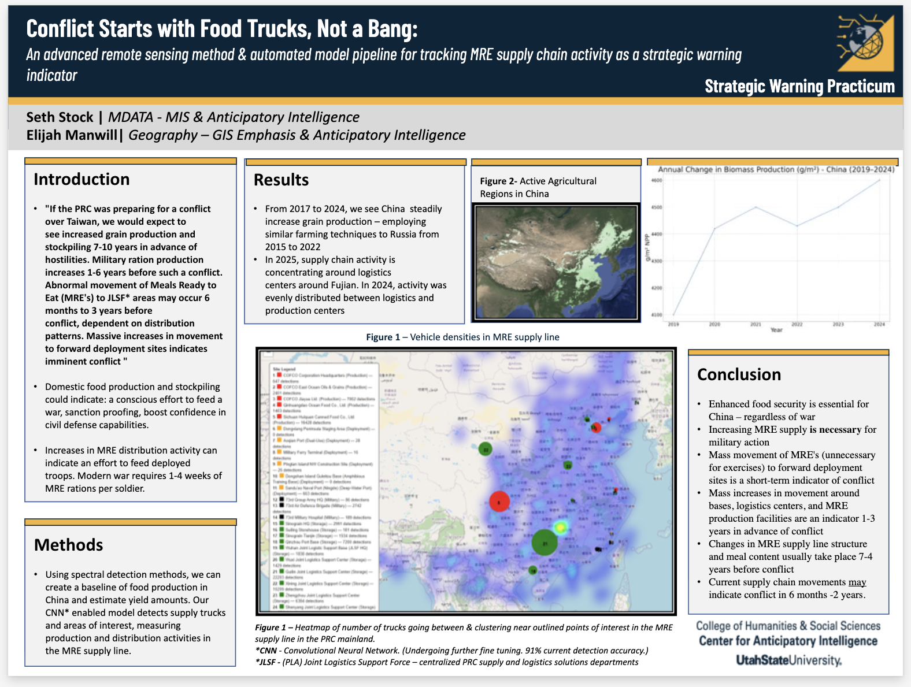

<h2>My GIS and Remote Sensing Projects</h2>

<div id="projectCarousel" class="carousel slide" data-bs-ride="carousel">
  <div class="carousel-indicators">
    <button type="button" data-bs-target="#projectCarousel" data-bs-slide-to="0" class="active" aria-current="true"></button>
    <button type="button" data-bs-target="#projectCarousel" data-bs-slide-to="1"></button>
    <button type="button" data-bs-target="#projectCarousel" data-bs-slide-to="2"></button>
    <button type="button" data-bs-target="#projectCarousel" data-bs-slide-to="3"></button>
  </div>

  <div class="carousel-inner">
    <!-- Project 1 -->
    <div class="carousel-item active">
      
      <div class="carousel-caption d-none d-md-block">
        <h5><a href="https://github.com/JoelElijahManwill/China-OSINT-Practicum-Military-Food-Security-Analysis">OSINT Practicum Military Food Security</a></h5>
      </div>
    </div>

    <!-- Project 2 -->
    <div class="carousel-item">
      
      <div class="carousel-caption d-none d-md-block">
        <h5><a href="https://github.com/JoelElijahManwill/ACCESS-Bicycle-Comfortability">ACCESS Bicycle Comfortability</a></h5>
        <p><a href="https://github.com/JoelElijahManwill/ACCESS-Bicycle-Comfortability/raw/main/UGIC_Presentation_Final.pdf" class="btn btn-sm btn-light" target="_blank">View Presentation</a></p>
      </div>
    </div>

    <!-- Project 3 -->
    <div class="carousel-item">
      
      <div class="carousel-caption d-none d-md-block">
        <h5><a href="https://github.com/JoelElijahManwill/Water-Vegetation-Health-Dongbei-China">Water and Vegetation Health in China's Dongbei Region</a></h5>
      </div>
    </div>

    <!-- Project 4 -->
    <div class="carousel-item">
      
      <div class="carousel-caption d-none d-md-block">
        <h5><a href="https://github.com/JoelElijahManwill/Maritime-Pirate-Attacks-Geospatial-Analysis">Maritime Pirate Attacks Using Geospatial Analysis in R</a></h5>
      </div>
    </div>
  </div>

  <button class="carousel-control-prev" type="button" data-bs-target="#projectCarousel" data-bs-slide="prev">
    <span class="carousel-control-prev-icon" aria-hidden="true"></span>
  </button>
  <button class="carousel-control-next" type="button" data-bs-target="#projectCarousel" data-bs-slide="next">
    <span class="carousel-control-next-icon" aria-hidden="true"></span>
  </button>
</div>
